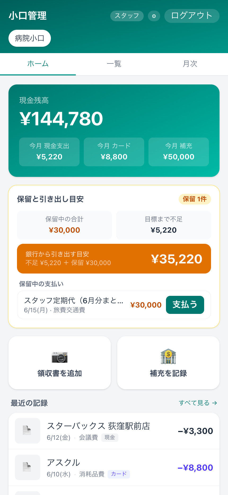
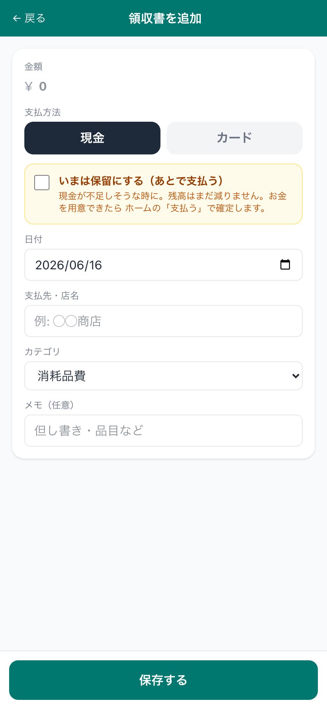
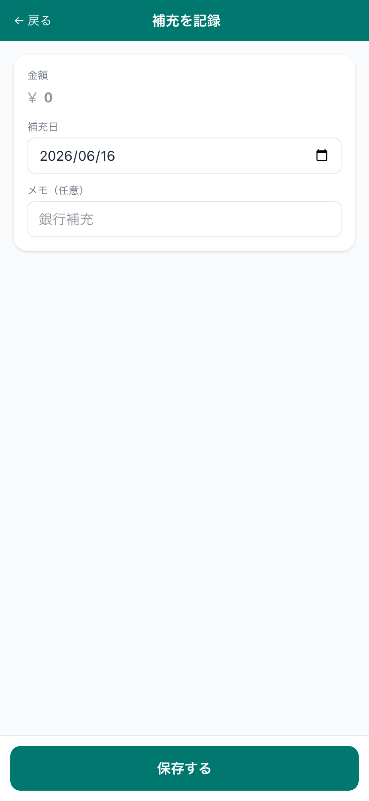
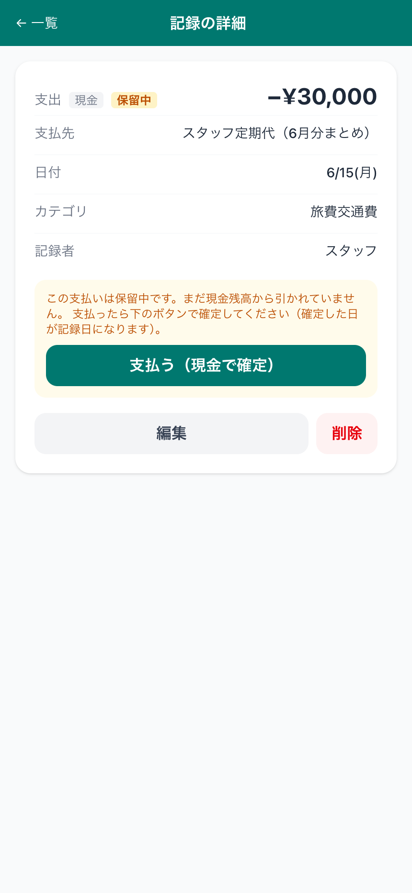
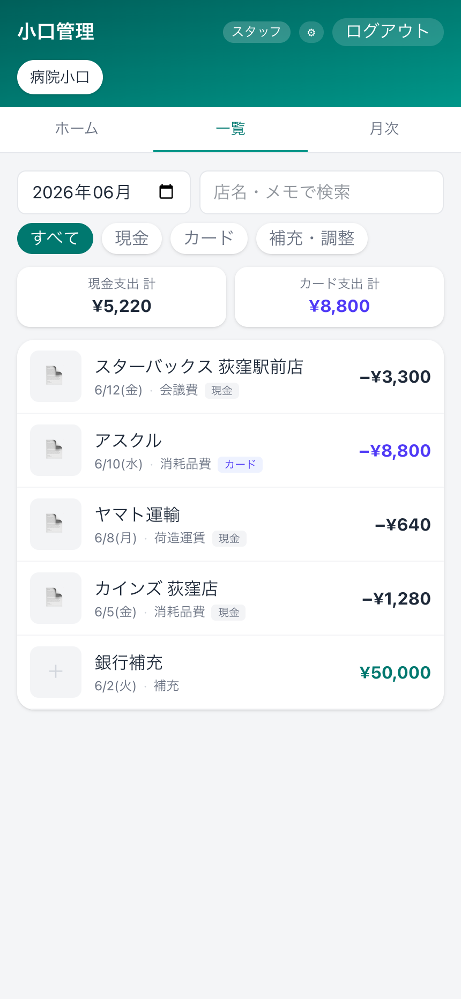
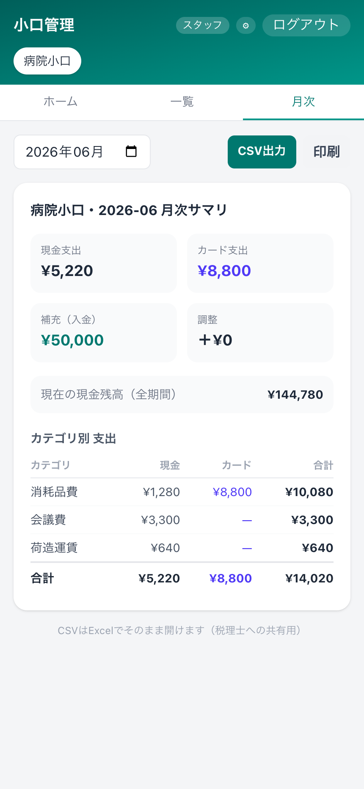
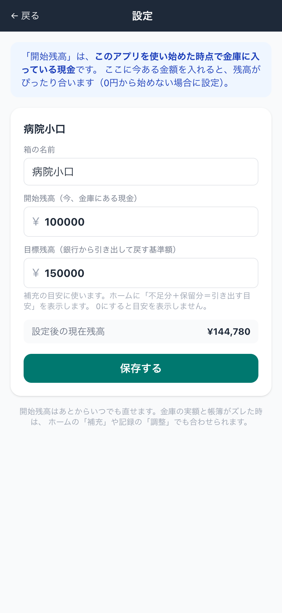

小口管理アプリ 使い方ガイド
← ガイド一覧へ
受付・スタッフ向け（病院小口） ｜ 2026年6月16日版 ｜ 荻窪ツイン動物病院
30秒まとめ
病院の小口現金（
病院小口）を管理するアプリです。買い物をしたら
「領収書を追加」でレシートを撮影 →
AIが日付・店名・金額・カテゴリを自動で読み取る → 確認して
保存。銀行から下ろして金庫に入れたら
「補充を記録」。現金が足りなそうな大きい支払い（例：定期代のまとめ払い）は
「保留」にして待たせられます。ホームには
今いくら銀行から下ろせばいいか（引き出し目安）も出ます。月末は
月次でまとめ・CSV出力できます。
緑 = スタッフの操作
現金＝残高が減る
カード＝残高は減らない
アクセス（スマホ・院内PC・院外も可）
・院外・スマホ（おすすめ）：https://serverpc.tail2de5bb.ts.net:8445
・院内のWi-Fi／LAN：http://192.168.20.250:3400
※ 院外URLはTailscale（VPN）がオンの端末からのみ開けます。開けないときはスマホのTailscaleがオンか確認してください。
※ 最初にスタッフ用パスコードを入れてログインします（パスコードは院長から共有されます）。
「病院小口」だけを使います。画面上部のタブに病院小口（みなさんが使う方）と 🔒 院長小口 がありますが、スタッフ用パスコードでは病院小口だけが見えます。院長小口はスタッフからは見えません。
1. 画面の全体像
🏠 ホーム現金残高・引き出し目安・保留・最近の記録
📋 一覧記録の一覧・月や店名で検索
📅 月次月のまとめ・カテゴリ別・CSV出力
⚙️ 設定箱の名前・開始残高・目標残高

▲ ホーム：現金残高、引き出し目安、保留中の支払い、最近の記録
上の3つ（ホーム／一覧／月次）で画面を切り替え、右上の⚙で設定を開きます。
2. 基本の流れ（領収書を記録する）
① 買い物をしたらレシートを用意
病院のお金（小口）で支払った買い物のレシート・領収書を用意します。
▼
② ホームの「📷 領収書を追加」
📷 領収書を追加 を押し、カメラで撮影するか写真を選ぶ。写真なしで手入力もできます。
▼
③ AIが自動で読み取る
日付・店名・金額・消費税・カテゴリ・支払方法を自動で入力してくれます（数秒）。
▼
④ 内容を確認して直す
読み取りが合っているか確認。違っていれば直します（特に金額・日付・現金/カード）。
▼
⑤「保存する」
保存すると記録され、現金で払った分はホームの残高から自動で引かれます。
3. 領収書を追加（入力項目）

▲ 領収書を追加：金額・支払方法・日付・支払先・カテゴリ・メモ
| 項目 | 内容 |
|---|
| 金額 | 税込の支払額。レシート撮影なら自動で入ります。 |
| 支払方法 | 現金＝金庫から払った（残高が減る）／カード＝カード払い（残高は減りません。記録だけ）。 |
| いまは保留にする | 現金が足りなそうな時に「あとで支払う」として待たせます（現金のときだけ表示。次の章を参照）。 |
| 日付 | レシートの日付。 |
| 支払先・店名 | お店の名前。 |
| カテゴリ | 消耗品費・旅費交通費・荷造運賃・会議費・福利厚生費 など（税理士さん用の科目）。 |
| メモ（任意） | 但し書き・品目など。 |
カードで払ったものも記録してください。カードは現金残高からは引かれませんが、月次やCSVに「カード支出」として残るので、あとで見返すのに役立ちます。
4. 補充を記録（銀行から下ろして金庫に入れた）

▲ 補充を記録：金額と補充日を入れるだけ
銀行から下ろして金庫にお金を入れたら、ホームの🏦 補充を記録から金額と補充日を記録します。補充した分だけ現金残高が増えます。
5. 支払いの「保留」と引き出し目安 大事
現金が足りなそうな大きい支払い（例：スタッフの定期代をまとめて払う）を、いったん「保留」にしてお金を用意できるまで待たせることができます。
保留中領収書追加で「いまは保留にする」をON。まだ残高から引かれません
▶
支払う（確定）お金を用意できたら「支払う」。残高から引かれ、確定した日が記録日になります

▲ 保留中の記録：「保留中」の印。支払う（現金で確定）で確定
引き出し目安（ホームのカード）
ホームの「保留と引き出し目安」カードに、銀行からいくら下ろせばいいかの目安が出ます。
| 表示 | 意味 |
|---|
| 保留中の合計 | いま保留にしている支払いの合計。 |
| 目標まで不足 | 目標残高（標準は15万円）に対して、今いくら足りないか。 |
| 銀行から引き出す目安 | 不足分 ＋ 保留の合計。この金額を下ろせば、保留分を払っても残高が目標に戻ります。 |
保留中の支払いは、用意ができたらホームの保留一覧の支払う、または記録を開いて「支払う（現金で確定）」で確定します。
保留中は一覧・月次・CSVには出ません。まだ払っていないお金なので、「支払う」で確定したときに初めて記録・残高に反映されます。保留は現金の支払いだけに使えます（カードは対象外）。
6. 一覧（記録を見る・探す）

▲ 一覧：月で絞り込み、店名・メモで検索、現金/カード/補充で切替
記録の一覧です。上で月を選び、店名・メモで検索、すべて／現金／カード／補充・調整のチップで絞り込めます。上部に現金支出 計・カード支出 計が出ます。各記録を押すと詳細（編集・削除）が開きます。
7. 月次（まとめ・CSV出力）

▲ 月次：現金/カード支出・補充・カテゴリ別と、CSV出力・印刷
月ごとのまとめです。現金支出・カード支出・補充・調整の合計とカテゴリ別の内訳が出ます。右上の「CSV出力」でExcelで開けるファイルを書き出せます（税理士さんへの共有用）。「印刷」もできます。
8. 設定

▲ 設定：箱の名前・開始残高・目標残高
| 項目 | 内容 |
|---|
| 箱の名前 | 帳簿の表示名（標準は「病院小口」）。 |
| 開始残高 | アプリを使い始めた時点で金庫にある現金。ここを実額にすると残高がぴったり合います。 |
| 目標残高 | 銀行から引き出して戻す基準額（標準は15万円）。ホームの「引き出す目安」に使われます。 |
変更したら「保存する」を押します。
9. よくある質問
| Q | A |
|---|
| 院外（スマホ）から開けない | スマホのTailscale をオンにして https://serverpc.tail2de5bb.ts.net:8445 を開いてください。 |
| カードで払ったのに残高が減らない | 正常です。カードは現金残高に影響しません（記録だけ残ります）。現金で払った分だけ残高が減ります。 |
| 大きい支払いで現金が足りない | 領収書追加で「いまは保留にする」をON。お金を用意できたらホームの「支払う」で確定します。保留中は残高から引かれません。 |
| 銀行からいくら下ろせばいい？ | ホームの「銀行から引き出す目安」（不足分＋保留の合計）を参考にしてください。 |
| 金額や店名の読み取りが間違っている | 保存前に手で直せます。保存後も記録を開いて「編集」から直せます。 |
| 保存した記録が一覧に見当たらない | 保留中の記録は一覧に出ません（ホームの「保留中の支払い」にあります）。「支払う」で確定すると一覧に出ます。 |
| 金庫の現金と残高がズレている | 院長にご相談ください（「調整」で合わせます）。 |
| 院長小口のタブが見えない／開けない | 正常です。院長小口はスタッフからは見えません。みなさんは「病院小口」を使います。 |
| このアプリの不具合・要望は？ | 院内ツールです。不具合・追加要望は院長までお伝えください。 |
レシート撮影の注意：領収書はお店のレシートが基本ですが、撮影のときに飼い主さん・ペットのお名前やカルテなどが一緒に写り込まないようにしてください。万一写った写真は保存・共有しないでください。